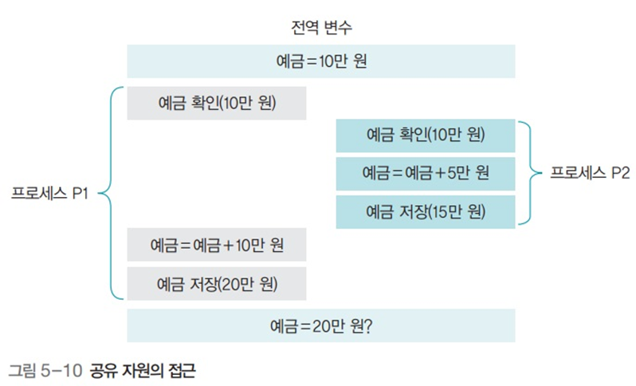

공유자원과 임계구역
공유자원과 임계구역
1. 공유 자원
- 여러 프로세스가 공동으로 이용하는 변수, 메모리, 파일
- 공동으로 이용되기에 누가 언제 데이터를 읽거나 쓰느냐에 따라 결과가 달라질 수 있음
경쟁 조건
- 2개 이상의 프로세스가 공유 자원을 병행적으로 읽거나 쓰는 상황
- 공유 자원 접근 순서에 따라 실행 결과가 달라짐


2. 임계 구역
- 위의 예에서
balance(예금) 부분. - 즉 공유 자원 접근 순서에 따라 달라지는 프로그램 영역
- 어떤 프로세스가 임계구역에 들어가면 다른 프로세스는 임계구역 밖에서 기다려야하며, 그 프로세스가 나와야 들어갈 수 있음
생산자-소비자 문제

sum=3일 때 동시 접근이 가능하게 되면- producer의
sum+1, customer의sum-1이 실행 순서에 따라 랜덤으로 출력되어버림
- producer의
- 하드웨어 자원의 경우에도 문제가 일어날 수 있음
해결 조건
상호 배제
- 한 프로세스가 임계구역에 들어가면 다른 프로세스는 임계구역 접근X
한정 대기
- 어떤 프로세스도 무한 대기하지 않아야 함
진행의 융통성
- 한 프로세스가 다른 프로세스의 진행을 방해해서는 안됨
임계구역 해결 코드: 공유 변수로 잠금을 직접 구현

lock=true인 경우 무한 루프 돌면서 대기lock=false인 경우 lock을 걸고 임계 구역에서 작업하다가 lock을 해제하고 나옴
문제점

lock=false일 때,lock=true로 걸고 임계 구역에 진입해야 하는데 그 직전에 타임아웃이 걸린다면?- 다른 프로세스도 임계 구역에 진입하게 되고, 해당 타임아웃으로 대기하고 있던 프로세스도 대기가 끝나 실행될 때 또 임계구역에 진입해버린다
- 동시에 임계구역에 진입해버릴 수 있다는 것
임계 구역 해결 코드: 상호 배제 조건을 충족하는 코드

- 상호 배제 조건은 만족하지만, 여기서는 타임아웃 타이밍에 따라 상호 무한루프에 빠질 수 있는 위험이 있다.
임계 구역 해결 코드: 상호 배제와 한정 대기 조건을 만족

- 상호 배제와 한정 대기 조건을 만족
- 그러나 만약 P1이 자주 실행되어야 하는 상황이라면?
- P1은 P2가 실행되어 락을 바꿔줄 때 까지 반드시 대기해야 한다 (반드시 번갈아가며 실행되야하므로)
- 그러므로 진행의 융통성을 충족하지 않음
임계 구역 문제 해결: 하드웨어의 지원
while(.==true);문과lock=true문을 한꺼번에 실행 →testandset(&lock)==true
검사-지정 코드를 이용하면 명령어 실행 중간에 타임아웃이 걸려 임계구역을 보호하지 못하는 문제가 발생하지 않음

- 이 명령어는 원자성 (쪼개질 수 없음) 을 가져 중간에 인터럽트 될 수 없다.
임계 구역 문제 해결: 피터슨 알고리즘

- 임계구역 해결의 세 가지 조건 모두 만족
- 2개의 프로세스만 사용 가능하다는 한계
임계 구역 문제 해결: 데커 알고리즘

- 임계구역 해결의 세 가지 조건 모두 만족
- 2개의 프로세스만 사용 가능하다는 한계
임계 구역 문제 해결: 세마포어
프로세스가 작업을 마치면 다음 프로세스에 임계구역을 사용하라는 동기화 신호를 보냄


- Semaphore(.) : 전역변수 RS를 n으로 초기화. n은 현재 사용 가능한 자원의 수
- P() : 잠금을 수행하는 코드
- RS>0이면 (사용 가능한 자원이 있으면) : RS를 1만큼 감소시키고 임계구역 진입
- RS≤0이면 : 0보다 커질 때 까지 block()
- V() : 잠금 해제와 동기화를 같이 수행
- RS 값을 1 증가시킴
- 세마포어에서 기다리는 다른 프로세스에게 wake_up() 신호를 보내 임계구역에 진입해도 좋다는 신호 보냄
- 뮤텍스랑 같음
- 간편하게 구현 가능
- 이거도 현재는 잘 안쓰이긴 함
BINARY 세마포어 사용 예
- 초기값이 1
- 상호 배제를 위해 사용 (하나 들어가면 아무도 못들어감)

COUNTING 세마포어 예
- 초기값이 1 이상
- 한개 이상의 자원이 있을 때 사용
- 여러개의 프로세스가 임계구역에 접근 가능

세마포어의 잘못된 사용 예 (실수)

- 실수하여 세마포어를 쓰지 않고 공유자원에 접근하는 경우
- 그냥 바로 접근이 가능해 임계구역 보호 불가능
- 실수하여
P()를 두번 써버림wake_up()신호가 발생되지 않아 세마포어에서 대기하고 있는 프로세스들 무한 대기
V()와P()를 반대로 사용- 역시 상호 배제가 적용되지 않은 상태로 되버리므로 임계구역 보호 불가능
임계구역 해결 방법: 모니터
공유자원을 내부적으로 숨기고 공유 자원에 접근하기 위한 인터페이스만 제공
자원을 보호하고 프로세스 간에 동기화를 시킴
작동 원리

- 임계구역으로 들어가려는 프로세스는 직접
P()혹은V()를 사용하지 않음 - 대신 모니터에게 작업을 요청
- 모니터는 요청받은 작업을 모니터 큐에 저장하고 순서대로 처리, 결과만 프로세스에 알려줌
모니터
- 모니터는 데이터와 프로시저 (메소드, 함수)를 포함하는 객체
- 모니터 안에서만 접근 가능
- 모니터 경계에서는 상호 배제를 엄격히 지켜야 함
- 한번에 한 스레드만 모니터 진입 가능
- 모니터는 상호 배제 보장
- 모니터가 사용되고 있을 때 들어가려는 스레드는 대기해야 함
- 모니터 안의 데이터는 모니터 내의 프로시저를 통해서만 접근 가능
- 상호배제, 동기화 두가지 모두 구현
- 동기화
- 예를 들어 생산자와 소비자의 예에서 소비자가 아직 미처 소비하지도 않았는데 계속해서 데이터를 공급하는 경우
- 한정된 큐에서 계속해서 공급하면 오버플로우 발생
- 그러므로 생산자는 소비자가 버퍼를 비웠을 때 공급하고, 소비자는 생산자가 버퍼를 채웠을 때 소비해야 하며 이를 동기적으로 실행하는 것이 동기화.
- 동기화를 구현하기 위해 조건 변수 구현
-
조건 변수
1 2wait(.) signal(.)어떤 조건 변수에 대해서 동작을 수행할 때 까지 대기하고 있다가 해당 동작이 완료되면 기다리고 있는 프로세스에게 시그널을 보내면 깨어나 모니터를 얻음
-
- 동기화
모니터 코드

- 제공하는 인터페이스만 간단히 사용하면 끝
모니터 내부 코드

자바 모니터
- 멀티 스레드를 사용하는 자바 응용 프로그램에서 상호 배제와 동기화를 제공
Synchronized키워드- 자바 객체에 상호 배제 기능 부여
Wait()메소드- 객체에 대한 잠금을 해제하고 상태 변수를 기다림
- 스레드는
notify()혹은notifyAll()메소드를 호출해 신호 보냄